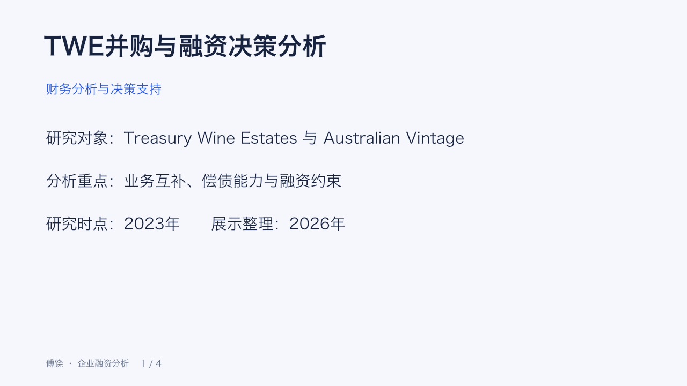

Project 04
TWE并购与融资决策分析
从业务互补到财务承受能力，拆解交易方案中的资金与偿债约束。
演示文稿
下载 PPT
点击幻灯片可查看大图
历史研究案例 · 2023。并购后指标来自原演示材料中的假设情景，不是真实交易结果。下方融资试算为单独的简化演示，不更新这些历史比率。
3.83 → 3.64原情景：利息保障倍数
1.07 → 1.01原情景：速动比率
0.52 → 0.45原情景：现金比率
融资结构试算
调整收购价、债务比例和借款利率，观察现金需求与年度新增利息。
简化计算：新增借款＝收购价×债务比例；年度利息＝新增借款×利率。未包含标的债务并表、手续费、税盾、偿债安排和协同现金流。
并购前后指标
| 指标 | 并购前 | 假设并购后 |
|---|---|---|
| 债务／权益 | 23.69% | 26.27% |
| 利息保障倍数 | 3.83 | 3.64 |
| 流动比率 | 2.04 | 2.08 |
| 速动比率 | 1.07 | 1.01 |
| 现金比率 | 0.52 | 0.45 |
来源：原 Project 1.pptx 第1页。融资试算与原比率表未建立完整并表衔接。
决策重点
1业务互补：评估低／无酒精产品能力和高端品牌组合的协同潜力。
2偿债缓冲：流动比率略升，不能抵消速动与现金比率下降所提示的压力。
3数据一致：统一收购价、融资比例及资本成本口径，再判断交易财务影响。
研究贡献与数据边界
个人工作涵盖杠杆、流动性、资本结构与WACC影响分析及汇报。不同原始版本的报价、融资比例和WACC存在差异，网页未将它们拼成一个已经验证的估值模型。
查看原项目证据与版本说明